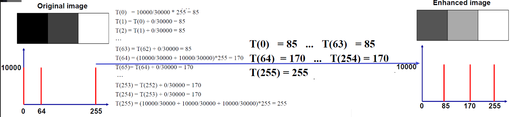

自学笔记，单词翻译可能出错
第 1 章 绪论
概述
图像：对客观世界视觉属性的描述
视觉：图像获取、基于图像的感知
计算机视觉的目标：让机器“理解”图像和视频
计算机视觉的应用
- 智能监控
- 无人车
- 医学影像分析
- 机器人（定位、导航）
- 增强/混合现实
- 图像检索
- 智能图像管理/编辑
- 刷脸
- 面孔和数码相机，笑容检测
- 图像拼接
- 体感游戏
- 视觉特效
计算机视觉的难点/挑战
- 光照 Illumination
- 物体姿势 Object pose
- 噪声 Clutter
- 遮蔽 Occlusions
- 外观识别 Intra-class appearance
- 视点 Viewpoint
- 类内差异 Intra-Category Variation，比如沙发有很多种
- 复杂度 Complexity
成像
人眼的成像：
- 物体在视网膜上的成像为倒影、视网膜位于球面上
- 人眼对光线有很强的环境适应能力
- 人眼对亮度的感受与光线强度成对数关系
- 马赫带
- 人对亮度的感觉：亮度的相对性
- 对比引起的相对性
- 前景与背景的相对性
- 整体性：主观轮廓
图像获取方式的变化 Camera Obscura：
- 暗箱，点投影
- 绘画
- 针孔相机 Pinhole Camera
相机：
- 光圈 Aperture，或者说孔径 Pinhole Size：进光量
- 镜头作用：保持图像清晰对焦，同时收集大面积的光线
- 薄透镜：
- 景深：可以容忍模糊的图像平面之间的距离
- 视野：取决于焦距
数字相片：
- 底片被传感器阵列替代
- 电荷耦合器件阵列 (Charge-Coupled device，CCD)
- 图片离散成像素
- 光强量化为像素值
- 颜色传感器：将进光用不同的过滤层转换为传感阵列，ceil 的颜色缺失可从相邻 ceil 中获取
处理
图像 -> 采样 -> 量化：
采样
- 分辨率，采样间隔
- 粗采样 Coarse Sampling
- 细采样 Finer Sampling
量化
信号量化 $K=2^n $
影响图像灰度
结构
文件格式：
矢量图 vector images，
.ai .eps .ps ...- 优点：缩放无混叠 aliasing 和 模糊 blur
- 缺点：难以获取，应用有限
位图 bitmap
.bmp .jpg .pmg .gif存储像素色彩。优缺点与矢量图相反。将矢量图进行光栅化 rasterize 可得到位图
GIF —— Graphics Interchange Format
- 8 位真彩
- 可进行融色 dither
- 优点：生动 animated、易懂 transparent
JPEG —— Joint Photographic Experts Group
- 16 bit，一次性不融色 dither 地展示上百万像素
- 约 60% 的压缩比是质量与文件大小的合适比例
PNG —— Portable Network Graphics
- 基于 ZIP 的无损压缩
- 4-channel image，4通道图，第4个参数控制透明
BMP —— Windows Bitmap
- 简单、未压缩 uncompressed
- 设备独立位图 Device Independent Bitmap, DIB，设备依赖位图 Device Dependent Bitmap, DDB
位图的存储结构：
size (resolution, dpi, width*height, numOfPixels)
Color Space (RGB, CMYK, YUV, Lab, …)
Channels (1,2,3,4, gray&color)，通道
Depth (8bits, 12bits, …, LDR&HDR)
Coordinate system
1
2
3
4
5
6
7
8
9
10
11
12
13
14
15
16
17
18
19
20
21
22
23
24
25
26
27
28
29
30
31struct MyImage
{
int width, height;
int type; // 类型(通道数、位深度)
/*
CV_8UC3: unsigned char[3]
CV_32SC1: int[1]
CV_32UC1: uint[1]
CV_32FC4: float[4]
*/
void* data; // 图像数据
int step; // 步长
}
int* getPixel(const MyImage &img, int x, int y)
{ // img.type=CV_32SC3: 32位带符号，3通道数据
return (int*)((char*)img.data+y*img.step+x*3*4);
}
void scanPixels(uchar *data, int width, int height, int step, int nc)
{ // step步长 nc通道数numOfChannel
uchar *row=data;
for(int yi=0; yi<height; yi++, row+=step)
{
uchar *px=row;
for(int xi=0; xi<width; xi++, px+=nc)
// px now address the pixel (xi,yi)
}
}
void scan_roi_pixels(MyImage &img, int x, int y, int roi_width, int roi_height)
{ // 通道数nc=img.nc();
scan_pixels( get_pixel(img, x, y), roi_width, roi_height, img.step, img.nc());
}
第 2 章 图像处理
概述
像素描述 (x, y, R, G, B)：
- 空间坐标 Spatial coordinate —— x, y
- 像素颜色 —— RGB, YUV, …
基本图像处理：
- 基于空间坐标 —— 几何变换（CG 课程中有所关注）
- 基于像素颜色 —— 代数运算（CV 中着重）
代数运算
像素灰度变换
灰度变换 Gray Level Transformation，通过代数运算
最简单的图像处理任务
逐个像素转换：亮度 Intensity、对比度 Contrast
1 | /* 逐个像素扫描处理的通用过程 */ |
亮度调整函数
- 亮度调整：整体变亮或变暗
- 线性函数
- 非线性函数
- log 函数 $s = c·log(1+r)$
- 幂次函数 $s = c·r^\gamma $

- 伽马矫正
- 对图像的伽马曲线进行编辑，图像进行非线性色调编辑的方法,检出图像信号中的深色部分和浅色部分，并使两者比例增大，从而提高图像对比度效果
对比度调整函数
对比度调整：亮的更亮，暗的更暗
- 增加图像处理中被处理的灰度等级范围
- 分层量化 Quantize、固定阈值二值化 Threshold
- 分段线性 Piecewise
- Sigmoid 函数
- 优美 S 形曲线的数学函数，连续，光滑，严格单调，以(0,0.5)中心对称，是一个非常良好的阈值函数
多图像处理
输入多幅大小相同的图像，基于对应像素进行计算，输出图像。
$O(x, y) = f[I^1(x,y), I^2(x,y), \cdots , I^N(x,y)] $
- Multiply
- XOR
- OR
Alpha Blending，阿尔法混合
- $C = \alpha F + (1-\alpha) B$
- 给定 C，如何分离 $\alpha、F、B $ 。C 去掉 B 的纯色得到 $\alpha$
- $C = \alpha F + (1-\alpha) B$
Image Matting (masking, 抠图)
从图像中提取特殊的物体或区域，得到 alpha map
对于细微区域或头发等物体的抠图需要解决
前景恢复 foreground restoration
背景相减
- 当前帧 $I(x, y)=(r,g,b)$，背景 $B(x,y) = (r,g,b) $，阈值 $T $
- $Diff(x, y) = ||I(x,y)-B(x,y)||^2 ，当 Diff(x,y)>T 则认为是前景$
几何处理
- 翻转 flip
- 缩放 resize / zoom in / zoom out / scale
- 旋转 rotation
- 仿射变换 Affine Transform
- 透视变换 Perspective Transform
- 图形变形 Image Warping
翻转
1 | void vflip(const void *in, int width, int height, int istep, int pix_size, void *out, int ostep) |
放大 Zoom in
如何填充新增的像素点：
方案 1，投影 projection，对小图中的每个像素，计算其在大图中对应的像素。会遗漏像素
方案 2，查找 Lookup，对大图中的每个像素，计算其在小图中对应的像素
方案 3，重采样 Resampling
基于邻近像素的值，计算非整数位置上的颜色值。有三种策略
最近邻 （Nearest Neighbor)
线性插值 (Bilinear Interpolation)
1
2
3
4
5
6float bilinear(float a, float b, float c, float d, float dx, float dy)
{
float h1=a+dx*(b-a); // =(1-dx)*a+dx*b
float h2=c+dx*(d-c);
return h1+dy*(h2-h1);
}双三次插值 (Bicubic Interpolation)
- 怎么解是 $\begin{cases} f(0) = d \ f(1)=a+b+c+d \ f(2) =8a+4b+2c+d \ f(3)=27a+9b+3c+d \end{cases} \Rightarrow [a,b,c,d] $ 吗？ 不是正确解法，等式过多。
- 正确解法 $\begin{cases}f(0) = d \ f(1) = a+b+c+d \ y’ = 3ax^2 +2bx + c \ f’(0)=c \ f’(1)=3a+2b+c \end{cases} \Rightarrow [a,b,c,d]$
- 补充：离散函数的导数 $f’(x) = \frac{[f(x+1)-f(x)]+[f(x)-f(x-1)]}{2}=\frac{f(x+1)-f(x-1)}{2} $
Super-Resolution (超分辨率)
以下引入 CG 的笔记，有所更改
二维变换原理
变换：比例、旋转、镜像、错切、平移
对于一个图形，可用顶点表描述图形的几何关系，用连边表来描述图形的拓扑关系。故对图形的变换，只变换图形的顶点表
仿射变换
- Affine Transformation
- 平直性：直线变换后仍是直线
- 平行性：平行线变换后仍平行
- 二维仿射变换： $\begin{cases} x’ = a_1x+b_1y+c_1 \ y’=a_2x+b_2y+c_2 \end{cases}$
- 二维仿射变换，矩阵形式：$\left[ \begin{matrix} x^* & y^* \end{matrix}\right] =\left[ \begin{matrix} x & y & 1 \end{matrix}\right]· \left[ \begin{matrix} a_1 & a_2\ b_1 & b_2 \ c_1 & c_2 \end{matrix} \right] $
特殊的仿射变换：
- 刚性变换 Rigid Transformation
- 只包含平移和旋转
- 保持物体的形状、尺寸
- 相当于正交变换
- 相似变换 Similar Transformation
- 只包含平移、旋转和等比缩放
- 保持物体的形状
仿射变换 Affine Transformation： 在同一平面内部的变换
视角变换 Perspective Transform： 可表示不同视角观察到的同一平面，或同一视角观察到的不同平面之间的变换
齐次坐标
- 二维平面中用(x, y)表示一个点，不妨说是一个向量(x, y)表示一个点。所以可以用第3维为常数的(x, y, 1)表示二维平面上的向量
- 这种n+1维表示n维的方法称为——齐次坐标表示法，n维向量 $(p_1,p_2,\cdots,p_n)$ 表示为 $(hp_1,hp_2,\cdots,hp_n, h)$，其中 $h $ 称为哑坐标，特别的 h=1 时称齐次坐标为规格化坐标。
- 二维仿射变换，齐次坐标表示：$\left[ \begin{matrix} x^* & y^*&1 \end{matrix}\right] =\left[ \begin{matrix} x & y & 1 \end{matrix}\right]· \left[ \begin{matrix} a_1 & a_2 &0\ b_1 & b_2&0 \ c_1 & c_2 &1\end{matrix} \right] $
- 不使用齐次坐标可以做比例、对称、旋转变换，但做不到平移变化，无法增加常数项。
平移变换
- 不产生变形而移动物体的刚体变换，即物体上的每个点移动相同数量的坐标
- 坐标形式：$\begin{cases} x^* = x+T_x \ y^*=y + T_y \end{cases} $
- 齐次坐标形式：$\left[ \begin{matrix} x^* & y^* &1\end{matrix}\right] =\left[ \begin{matrix} x & y & 1 \end{matrix}\right]· \left[ \begin{matrix} 1 & 0 &0 \0&1&0\T_x&T_y&1 \end{matrix} \right] $
比例变换
- 相对于坐标原点沿x方向放缩$S_x$倍，沿y方向放缩$S_y$倍。S > 1放大，S < 1 缩小。
- 坐标形式：$\begin{cases} x^* = x·S_x \ y^*=y·S_y \end{cases} $
- 齐次坐标形式：$\left[ \begin{matrix} x^* & y^* &1\end{matrix}\right] =\left[ \begin{matrix} x & y & 1 \end{matrix}\right]· \left[ \begin{matrix} S_x & 0 &0 \0&S_y&0\0&0&1 \end{matrix} \right] =\left[ \begin{matrix} x·S_x & y·S_y &1\end{matrix}\right] $
- 当 $S_x =S_y $ 时，为整体比例变换，$\left[ \begin{matrix} x^* & y^* &1\end{matrix}\right] =\left[ \begin{matrix} x & y & 1 \end{matrix}\right]· \left[ \begin{matrix} 1 & 0 &0 \0&1&0\0&0&S \end{matrix} \right] =\left[ \begin{matrix} \frac{x}{S} & \frac{y}{S} &1\end{matrix}\right] $，S>1缩小，0<S<1缩小，S<0发生关于原点的对称等比变换
对称变换
- 也称镜像变换。有关于x轴、y轴、原点、某条直线的对称变换
- 关于 x 轴对称：$\left[ \begin{matrix} x^* & y^* &1\end{matrix}\right] =\left[ \begin{matrix} x & y & 1 \end{matrix}\right]· \left[ \begin{matrix} 1 & 0 &0 \0&-1&0\0&0&1 \end{matrix} \right] =\left[ \begin{matrix} x&-y&1\end{matrix}\right] $
- 关于 y 轴对称：$\left[ \begin{matrix} x^* & y^* &1\end{matrix}\right] =\left[ \begin{matrix} x & y & 1 \end{matrix}\right]· \left[ \begin{matrix} -1 & 0 &0 \0&1&0\0&0&1 \end{matrix} \right] =\left[ \begin{matrix} -x&y&1\end{matrix}\right] $
- 关于原点对称：$\left[ \begin{matrix} x^* & y^* &1\end{matrix}\right] =\left[ \begin{matrix} x & y & 1 \end{matrix}\right]· \left[ \begin{matrix} -1 & 0 &0 \0&-1&0\0&0&1 \end{matrix} \right] =\left[ \begin{matrix} -x&-y&1\end{matrix}\right] $
旋转变换
- 将点绕原点旋转角度 $\theta$ ，逆时针为正，顺时针为负
- 坐标形式（逆时针）：$\begin{cases} x^* =r·cos(\alpha+\theta)=r·cos\alpha ·cos\theta-r·sin\alpha ·sin\theta \ y^* =r·sin(\alpha+\theta)=r·cos\alpha ·sin\theta + r·sin\alpha ·cos\theta\end{cases} \Rightarrow \begin{cases} x^* =x ·cos\theta-y ·sin\theta \ y^* =x ·sin\theta + y ·cos\theta\end{cases} $
- 齐次坐标形式（逆时针）：$\left[ \begin{matrix} x^* & y^* &1\end{matrix}\right] =\left[ \begin{matrix} x & y & 1 \end{matrix}\right]· \left[ \begin{matrix} cos\theta & sin\theta &0\-sin\theta&cos\theta & 0\0&0&1 \end{matrix} \right] =\left[ \begin{matrix} x ·cos\theta-y ·sin\theta & x ·sin\theta + y ·cos &1\end{matrix}\right] $
- 顺时针只要将 $\theta = -\theta $ 即可。

基于中心点的旋转
- 先把坐标系以到中心点 $(c_x,c_y)$ ，再以进行旋转
错切变换
- 弹性物体的变形处理

- 变换矩阵中的非对角元素起着把图形沿x或y方向错切的作用
- 齐次坐标形式：$\left[ \begin{matrix} x^* & y^* &1\end{matrix}\right] =\left[ \begin{matrix} x & y & 1 \end{matrix}\right]· \left[ \begin{matrix} 1 & b & 0\ c &1 &0\0&0&1 \end{matrix} \right] =\left[ \begin{matrix}c+cy&bx+y &1\end{matrix}\right] $
- 沿 x 方向错切，即 b=0 ：$\left[ \begin{matrix} x^* & y^* &1\end{matrix}\right] =\left[ \begin{matrix} x & y & 1 \end{matrix}\right]· \left[ \begin{matrix} 1 & 0 & 0\ c &1 &0\0&0&1 \end{matrix} \right] =\left[ \begin{matrix}c+cy&y &1\end{matrix}\right] $
复合变换
- 图形作大于一次的变换，$P^* = P · T = P·(T_1·T_2·\cdots ·T_n) ，n\gt 1$，矩阵相乘不可交换！
- 二维复合平移：$T = T_{t1}·T_{t2} = \left[ \begin{matrix} 1 & 0 &0 \0&1&0\T_{x1}&T_{y1}&1 \end{matrix} \right] · \left[ \begin{matrix} 1 & 0 &0 \0&1&0\T_{x1}&T_{y1}&1 \end{matrix} \right] =\left[ \begin{matrix} 1 & 0 &0 \0&1&0\T_{x1}+T_{x2}&T_{y1}+T_{y2}&1 \end{matrix} \right] $
- 二维复合比例：$T = T_{s1}·T_{s2} = \left[ \begin{matrix} S_{x1} & 0 &0 \0&S_{y1}&0\0&0&1 \end{matrix} \right] · \left[ \begin{matrix} S_{x2} & 0 &0 \0&S_{y2}&0\0&0&1 \end{matrix} \right]= \left[ \begin{matrix} S_{x1}·S_{x2} & 0 &0 \0&S_{y1}·S_{y2}&0\0&0&1 \end{matrix} \right]$
- 二维复合旋转：$T = T_{r1}·T_{r2} = \left[ \begin{matrix} cos\theta_1 & sin\theta_1 &0\-sin\theta_1&cos\theta_1 & 0\0&0&1 \end{matrix} \right] · \left[ \begin{matrix} cos\theta_2 & sin\theta_2 &0\-sin\theta_2&cos\theta_2 & 0\0&0&1 \end{matrix} \right]=\left[ \begin{matrix} cos(\theta_1+\theta_2) & sin(\theta_1+\theta_2) &0\-sin(\theta_1+\theta_2)&cos(\theta_1+\theta_2) & 0\0&0&1 \end{matrix} \right] $
坐标系变换
- 图形变换经常需要从一个坐标系变换到另一个坐标系，如下图从x0y变换到x’0’y’

- 上图可以拆分成，$x’0’y’ \xrightarrow{平移} x’0y’ \xrightarrow{旋转} x0y $，注意是从目标到源
- $T = T_{t}·T_{r} = \left[ \begin{matrix} 1 & 0 &0 \0&1&0\-x_0&-y_0&1 \end{matrix} \right] · \left[ \begin{matrix} cos(-\theta) & sin(-\theta) &0\-sin(-\theta)&cos(-\theta) & 0\0&0&1 \end{matrix} \right] $
任意参考点的几何变换
- 在以往的变换中，以 (0, 0) 为参考点，倘若以任意点为参考点，则：
- 将参考点移到原点（平移）
- 针对原点进行二维几何变换（变换）
- 将原点移到参考点（反平移）
二维变换矩阵
二维空间中某点的变化可以表示成点的齐次坐标与 3 阶的二维变换矩阵 $T_{2d} $ 相乘
$\left[ \begin{matrix} x^* & y^* &1\end{matrix}\right] =\left[ \begin{matrix} x & y & 1 \end{matrix}\right]· \left[ \begin{matrix} a&b&p\c&d&q\l&m&s \end{matrix} \right] $
二维图形几何变换的计算
- 点的变换：$\left[ \begin{matrix} x^* & y^* &1\end{matrix}\right] =\left[ \begin{matrix} x & y & 1 \end{matrix}\right]· T $
- 直线的变换（两端点的变换）：$\left[ \begin{matrix} x_1^* & y_1^* &1\ x_2^* & y_2^* &1\end{matrix}\right] =\left[ \begin{matrix} x_1 & y_1 &1\ x_2 & y_2 &1\end{matrix}\right] ·T $
- 多边形的变换（每个顶点的变换）：$p =\left[ \begin{matrix} x_1^* & y_1^* &1\ x_2^* & y_2^* &1 \ \cdots&\cdots&\cdots\x_n^* &y_n^*&1\end{matrix}\right] $
代码接口设计
由于都是经过仿射矩阵进行变换，更好的形式是输入算好的矩阵，进行仿射变换。
1 | void rotate(const MyImage &input, MyImage &output, float angle); |
应用：图像匹配
基于仿射变换的图像匹配
在第 t 帧检测特征点 (特征检测)
计算特征点在第 t+1 帧的对应 (特征跟踪)。”t, t+1” 两个特征点记位特征点对
根据特征点对，估计第 t 帧到第 t+1 帧的仿射变换 A
利用 A 对第 t 帧的图像进行变换，将变换的结果作为与第 t+1 帧配准的图像： $Ap_t\leftrightarrow p_{t+1} $
如何估计两个图像之间的仿射变换 $A$？
- 不共线的 3 个平面点对决定一个二维仿射变换
$\left[ \begin{matrix} x^* & y^* \end{matrix}\right] =\left[ \begin{matrix} x & y & 1 \end{matrix}\right]· \left[ \begin{matrix} a_1 & a_2\ b_1 & b_2 \ c_1 & c_2 \end{matrix} \right] = [a_1 x +b_1 y + c_1, a_2 x + b_2 y + c_2] $ - 不共线的多于 3 个平面点对决定一个二维仿射变换$ A = arg_Amin \sum\limits_i ||Ap_i - p_i’||^2 $
- 不共线的 3 个平面点对决定一个二维仿射变换
应用：图像变形 Image Warping
记 $[x’ , y’] = f([x, y])$ 为像素坐标的一个映射，实现 $f$ 所表示的图像形变。
$f$ 的逆映射为： $[x, y] = f^{-1}([x’, y’]) = \begin{cases} [x’,y’] , & r>1 \ [cos\theta·x’-sin\theta ·y’ , sin\theta ·x’+ cos\theta ·y’ ], & otherwise \end{cases}$
- $r = \sqrt{x’^2+y’^2} ,\theta = (1-r)^2 $
- $[x, y], [x’, y’]$ 都是中心归一化坐标
正向查找、逆向查找的优缺点 / 局限性
第 3 章 空间过滤 Spatial Filtering
第 4 章 统计特征 Statistics
直方图 Histogram
描述一个像素的信息：
- 空间坐标
(x, y) - 颜色值
(RGB, YUV, ...) (x, y, R, G, B)
描述多个像素的信息：
- 空间坐标 -> 图像的结果
- 颜色值 -> 像素颜色的分布
直方图：
$h(r_k) = n_k $，其中 $r_k$ 是第 $k^{th} $ 灰度级，$n_k $ 是图像中对应灰度级的像素数点数目。
令 $n$ 为图像中像素总数，归一化直方图 $p(r_k) = \frac{n_k}{n}$
图像的直方图提供了关于对比度增强的可能性的信息
1 | void calc_hist(uchar *data, int width, int height, int step, int H[256]) |
直方图均衡化 Equalization
更”好看”的图像，其像素的灰度级可能有哪些特征：
- 覆盖了所有可能的灰度级
- 均匀分布
直方图均等化的工作：
- 设计一个转换函数使其转换为满足”好看”的图像的灰度级要求
HK 转换函数：
归一化 $r \rightarrow [0, 1]$
用于直方图均等化的灰度级转换函数（可以类比前缀和）：
$\large s_k = T(r_k) = \sum\limits_{j=0}^{k} \frac{n_j}{n}= \sum\limits_{j=0}^{k} p_r (r_j)$，其中 $p_r(r)$ 为原始图像灰度分布的概率密度函数例子：下图中灰度级 0、64、255 的像素分别转为了 85、170、255，使得对比度增强

证明不是均匀分布：
- 令 $s = T(r) $，其中 $r$ 是原灰度值， $T ()$ 是转换函数，$s=T(r)$ 是转换后的灰度值。该函数是连续的。在 $r\in [0,1]$ 是单调递增的。
- $s$ 的概率密度函数：$\large p_s(s) = p_r(r)|\frac{dr}{ds}|$
- $\large s = T(r) = \int_0^r p_r(w)dw$
其满足 $\large \frac{ds}{dr}=\frac{dT(r)}{dr} = \frac{d}{dr}[\int_0^rp_r(w)dw] = p_r(r)$
所以 $\large p_s(s) =p_r(r)|\frac{dr}{ds}| = p_r(r)\frac{1}{p_r(r)}=1$
总结：
- 转换 $\large s_k = T(r_k) = \sum\limits_{j=0}^{k} \frac{n_j}{n}= \sum\limits_{j=0}^{k} p_r (r_j)$ 不能产生均匀的直方图，其趋向于去扩散输入图像的直方图，使得图像的灰度值覆盖整个区间（对比度增强）。
- 该转换有固定的公式、算法，可以实现完全的自动化，故也利于硬件实现。
直方图匹配 Matching
直方图匹配的产生缘由：
- 直方图均衡化并不能交互式地图像增强，而是只能产生唯一一种结果 —— 一个近似均匀的直方图。
- 对于增强图像的直方图，有时会有特殊要求，即对其灰度值范围有定制的要求。
指定所需密度函数，可以得到如下转换函数 $G(z)$：
$\large v = G(z) = \sum\limits_0^z p_z(w)\approx \sum\limits_{i=0}^z\frac{n_i}{n} $
将转换函数的输入设为直方图均等化后的灰度值
$\Rightarrow z=G^{-1}(s) \Rightarrow z=G^{-1}[T(r)] $
应用特殊的方法去做图像增强能构造出有特殊意义的直方图：
- 生成符合指定概率密度函数的直方图（比如高斯函数密度）
- 或在图形设备上指定直方图形状（交互式），然后将其馈入处理器去执行直方图指定算法
局部增强 Local Enhancement
先前的方法是全局性的，当需要增强细节的时候，需要使用一些局部增强的方法
即根据每个像素附近的灰度分布来设计变换函数在邻域进行像素平移时有两种方案
- 一种是进行逐像素平移，此时邻域中仅一行/列改变，每一步移动中以新数据更新前一个位置得到的直方图。
- 另一种减少计算量的方法是使用非重叠区域。

在图像增强中使用直方图
第 5 章 结构
第 6 章 匹配
图像匹配：同一场景点在不同图像间像素的对应关系
- 同一视频中的两帧
- 不同人拍摄的同一场景
- 同一场景的不同角度
- 同一物体，不同场景
图像匹配的意义：
- 视频处理与分析的基础
- 视觉三维重建的基础
- 早起物体识别、图像检索技术的基础
- 计算机视觉半壁江山的基础
图像匹配关注的重点：局部特征
- 因为全局特征面临难以克服的困难：遮挡、形变、环境变化
特征检测
特征检测与匹配的挑战：
对图像几何变换的稳定性。Robust or covariant to out-of-plane (≈affine) transformations
对光照、噪声、模糊、分层变化的稳定性 Robust to lighting variations, noise, blur, quantization
特征点的特质：稳定检测、易于匹配
- 局部性 Locality：因此对于阻塞和杂乱是鲁棒的。Features are local, therefore robust to occlusion and clutter.
- 大量的 Quantity：We need a sufficient number of regions to cover the object.
- 独特性 Distinctiveness: The regions should contain “interesting” structure.
- 高效性 Efficiency: Close to real-time performance.
现成可行的检测器 / 方法 （已成为 CV 领域中许多最新应用的基本构件）：
- Hessian & Harris
- Laplacian, DoG
- Harris-/Hessian-Laplace
- Harris-/Hessian-Affine
- EBR and IBR
- MSER
- Salient Regions
角点检测
角点是图像很重要的特征,对图像图形的理解和分析有很重要的作用。角点在保留图像图形重要特征的同时,可以有效地减少信息的数据量,使其信息的含量很高,有效地提高了计算的速度,有利于图像的可靠匹配,使得实时处理成为可能。
角点在三维场景重建运动估计，目标跟踪、目标识别、图像配准与匹配等计算机视觉领域起着非常重要的作用。在现实世界中，角点对应于物体的拐角，道路的十字路口、丁字路口等。从图像分析的角度来定义角点可以有以下两种定义：
a. 角点可以是两个边缘的角点；
b. 角点是邻域内具有两个主方向的特征点；
前者往往需要对图像边缘进行编码，这在很大程度上依赖于图像的分割与边缘提取，具有相当大的难度和计算量，且一旦待检测目标局部发生变化，很可能导致操作的失败。早期主要有Rosenfeld 和 Freeman 等人的方法，后期有 CSS 等方法。
基于图像灰度的方法通过计算点的曲率及梯度来检测角点，避免了第一类方法存在的缺陷，此类方法主要有 Moravec 算子、Forstner 算子、Harris 算子、SUSAN 算子等。
下图中表明了三种点中哪个是角点：
- 平摊 flat：每个方向都没变化
- 边 edge：边方向没有变化
- 角 corner：角点处沿着任何方向移动都会引起像素颜色的明显变化
Harris 角点检测
- 将像素点看作滑动窗口，滑动窗口在角点处沿着任何方向移动都会引起像素颜色的明显变化
Moravec 算子
Moravec 算子是 Harris 算子的前身。
思想（个人理解）：定准一个小窗口，小窗口向各个方向移动（造成竖直/水平方向的偏移），窗口区域内的灰度值的变化程度加权到 $E$ 上，这个值越大，窗口内的点越可能是角点。
公式：$\Large E(u,v) = \sum\limits_{x, y}(w(x,y) [I(x+u,y+v) - I(x,y)]^2)$
其中 $(u, v)$ 是滑动窗口竖直和水平方向的偏移，$w(x,y)$ 是窗口函数，$(x,y)$ 是窗口中心，$I(x+u,y+v)$ 是移动后的亮度，$I(x,y)$ 是移动前的亮度。$E(u,v)$ 越大越可能是角点。
窗口函数 $w(x,y)$ 是一种滤波，高斯滤波或均值滤波均可。
Moravec 算子存在的问题：
只考虑了 4 个方向，所以不存在图像旋转不变性。
理应考虑多个方向，但是这个“多”，并不是数量上的，应该是用全微分，涉及到泰勒展开。
Harris 算子就是在 Moravec 算子上优化得到。
引入 Sobel 梯度算子
图像边缘一般都是通过对图像进行梯度运算来实现的。图像梯度的最重要性质是，梯度的方向在图像灰度最大变化率上，它恰好可以反映出图像边缘上的灰度变化 。
Sobel 算子
主要用作边缘检测，在技术上，它是一离散性差分算子，用来运算图像亮度函数的灰度之近似值。在图像的任何一点使用此算子，将会产生对应的灰度矢量或是其法矢量。
Sobel 卷积因子为：$G_x = \left[ \begin{matrix} -1 & 0 &+1 \-2&0&+2\-1&0&+1 \end{matrix} \right] \ \ \ G_y= \left[ \begin{matrix} +1 & +2 &+1 \0&0&0\-1&-2&+1 \end{matrix} \right] $
水平方向梯度幅值计算过程可以简易理解如下：
Harris 算子
对 Moravec 算子的公式利用泰勒展开（原理是 $f(x+u, y+v)\approx f(x,y)+uf_x(x,y)+vf_y(x,y) $），到：$\large E(u,v) = \sum\limits_{x, y}(w(x,y) [u^2I_x^2+2uvI_xI_y+v^2I_y^2])$
其中，$I_x$ 是图像水平梯度，$I_y$ 是图像竖直梯度上式可以化为 $\large E(u,v) \approx [u, v](\sum w(x,y) \left[ \begin{matrix} I_x^2 & I_xI_y \ I_xI_y & I_y^2 \end{matrix}\right] ) \left[ \begin{matrix} u \ v\end{matrix}\right]$
$\Rightarrow \large E(u,v) \approx [u \ v] · M·\left[ \begin{matrix} u \ v\end{matrix}\right]$ ，其中 $\large M =\sum\limits_{x, y} w(x,y) \left[ \begin{matrix} I_x^2 & I_xI_y \ I_xI_y & I_y^2 \end{matrix}\right] $
这个 $E(u,v) $ 的形式是一个二项式函数，本质上是一个椭圆函数
- 而平坦、边、角点的梯度分布如下，可以看到椭圆长短半径都较大的话可以断定是角点。
角点响应 $R= det(M)-k(trace(M))^2 $，其中 $det(M) = I_x^2I_y^2-I_xI_y\times I_xI_y，trace(M)=I_x^2+I_y^2$
$R \begin{cases}<0 & 边缘点\ \approx 0 & 平坦点 \ > 0 & 角点\end{cases}$代码 demo 框架

- 总结：
- Harris 对图像旋转有稳定性，对缩放没有稳定性
- Harris 对光照变化有稳定性，因为它用的是图像梯度
斑点检测 Blob Detection
斑点通常是指与周围有着颜色和灰度差别的区域。在实际地图中，往往存在着大量这样的斑点，如一颗树是一个斑点，一块草地是一个斑点，一栋房子也可以是一个斑点。由于斑点代表的是一个区域，”一坨东西”，相比单纯的角点，它的稳定性要好，抗噪声能力要强，所以它在图像配准上扮演了很重要的角色。
Hessian 检测器
在两个正交方向上搜索强导数。主要响应角点和很强的纹理区域。
Hessian 矩阵是一个多元函数的二阶偏导数构成的方阵，描述了函数的局部曲率。对一个图像 f(x,y)，其 Hessian 矩阵如下：
$$
\large H(f(x, y))=\left[\begin{array}{cc}{\frac{\partial^{2} f}{\partial x^{2}}} & {\frac{\partial^{2} f}{\partial x \partial y}} \ {\frac{\partial^{2} f}{\partial x \partial y}} & {\frac{\partial^{2} f}{\partial y^{2}}}\end{array}\right]
$$
在构造Hessian矩阵前需要对图像进行高斯滤波，去除噪声引起的像素突变，经过滤波后的Hessian矩阵表述为：
$$
H(\mathbf{x}, \sigma)=\left[\begin{array}{cc}{I_{x x}(\mathbf{x}, \sigma)} & {I_{x y}(\mathbf{x}, \sigma)} \ {I_{x y}(\mathbf{x}, \sigma)} & {I_{y y}(\mathbf{x}, \sigma)}\end{array}\right]
$$
当Hessian矩阵的判别式取得局部极值（极大值或极小值）时，判定当前点是比周围邻域内其他点更亮或更暗的点，由此来定位关键点的位置。
$$
\operatorname{det}(H)=I_{x x} I_{y y}-I_{x y}^{2}=\lambda_{1} \lambda_{2}
$$
对每个像素点计算图像在 X 方向 Y 方向的二阶偏导数，计算图像的 XY 方向的导数代入上式，
高斯金字塔
SIFT 尺度不变特征转换
尺度不变特征转换 (Scale-invariant feature transform 或 SIFT)是一种电脑视觉的算法用来侦测与描述影像中的局部性特征，它在空间尺度中寻找极值点，并提取出其位置、尺度、旋转不变量，此算法由 David Lowe 在 1999 年所发表，2004 年完善总结。
数学上，高斯和是唯一一个能模拟近处清晰远处模糊的一个线性和。